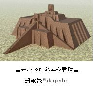
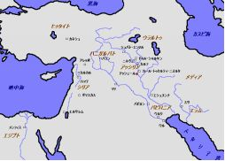

| アブラハムの生涯 Ⅰ | |
| 松﨑英高 | |
| (2018) | |
プロローグ
旧約聖書の創世記一一章後半から登場するアブラハム、紀元前二〇〇〇年ごろに中東に生きた人物が、ユダヤ教とキリスト教とイスラム教において、現在においても重要な位置を占めていることは、日本ではあまり知られていない。アブラハムに関する解釈の違いが三つの宗教に分裂した根本的な原因としてある。現在においても、この分裂が悲劇的な歴史を繰り返させている原因と言っても過言ではないだろう。
しかし、それらの悲劇の責任をアブラハムに背負わせるのは、まったくの見当違いだと思う。その責任は、むしろ聖書のテキストを読み違えた人間の側にある。本書の目的は、聖書のテキストからアブラハムの実像に迫ることにある。この作業によって、現在の複雑な中東情勢や過激な原理主義の根元にあるものが見えてくるのではないかと思うからである。
ユダヤ教やイスラム教においては、アブラハムは、民族の父祖として崇められる存在であり、キリスト教では「信仰の父」（信仰の模範）として特別な位置を占めている。しかし、聖書のテキストは、彼の弱さや神への不信を赤裸々に描いている。彼は、初めから信仰の偉人などではなく、不完全な在りようから完成に至る過程を一歩一歩登っていった、普通の人間であった。そのような人間味のあるアブラハムの描写は、不完全な人間をも見捨てることがない神の真実さに溢れている。それを表現するには、筆者はあまりにも浅学非力である。その分、読者のイマジネーッションに委ねたい。また、この本の内容は、個人的な解釈に基づくものであり、キリスト教のいかなる団体の公式な見解ではないことを理解されたい。
なお、本書はシリーズ本の最初のものである。続編の発刊はこれから出したいと願っている。また、本書に引用されている日本語訳聖書は、特に断りがない限り、新改訳聖書2017版を使用させていただいた。また、アブラハムという名は、晩年になって改名されたものであり、それまでは「アブラム」であった。しかし、混乱を避けるために、本書では「アブラハム」に統一したい。
二〇一八年二月一〇日
筆者プロフィール
一九五一年生まれ。九州大学薬学研究科博士課程修了。分子設計の研究に携わる。
唐津市、福岡市で牧師として奉仕。
目 次
一章 生まれ故郷を去った経緯
・衰退期にあったシュメール文明の都ウル
・交易ルートのかなめハランでの暮らし
二章 神の召しに従ってカナンに
・現実の地平に突入する神のことば
・神のことばに従うことの意味
一章 生まれ故郷を去った経緯
��衰退期にあったシュメール文明の都ウル
テラは、その息子アブラムと、ハランの子である孫のロトと、息子アブラムの妻である嫁のサライを伴い、カナンの地に行くために、一緒にカルデア人のウルを出発した。しかし、ハランまで来ると、彼らはそこに住んだ。
創世記一一章三一節
創世記のテキストは、ウルという都市がアブラハムの生まれ故郷であったとしている。時代は、紀元前二〇〇〇年ごろ、シュメール文明の最盛期を経て、次第に衰退していくウル第三王朝（前二〇五〇―一九五〇年ごろ）に当たる。当時ウルはシュメール文明を担う最大の都市であった。地理的には、ウルを含むシュメール人が住んでいた地域はシュメールと呼ばれ、メソポタミアの南部地域のバビロニアの南半分にある。現在のイラク南部やクエートに相当する。シュメール人は謎多き民族で、その出自が不明であるが、紀元前三五〇〇年ごろに突如としてこの地域に現れ、驚くべき革命的な文明を短期間で  造り上げていった。楔形文字の発明、六十進法、天文学（太陰暦）と七曜制、世界最古の法典（ウル・ナンム法典）などがあるが、これらはメソポタミアを越えて、エジプト文明やインダス文明、そして、現代にまでその影響が及んでいる。また、世界最古の物語とされるギルガメシュ叙事詩、そして、日干し煉瓦で造られた三層構造のジッグラトの発見は世界を驚かせた。
アブラハムの一族は元々セム系の遊牧民族であった。シュメールの都市ウルに住んでいたが、決してシュメール人ではなく、羊や牛などの家畜を飼いながら、この有力な都市での商いで生計を立てていたと思われる。当時の遊牧民族の生活スタイルは多様で、牧草地を求めて遊牧する者、隊商を組んで商いをする者、都市国家で傭兵や官僚になる者、そしてアブラハム一族のように、特定の町かその周辺に定住して、家畜の取引で安定的な収入を得る者もいたと思われる。このような者たちは、町から多くの利益を得ながらも、完全な定住者ではなく、事情が変われば別の場所に移動することもある半定住・半遊牧の生活スタイルであった。このような生活スタイルが、ウルを離れてカナンの地（現在のパレスチナ）に移動したアブラハムにも見られる。創世記のテキストは、このような寄留者の生活が近づいた町の権力者によって迫害される危険が伴っていたことを証ししている。のちに見るように、このことが彼を大きな失敗に駆り立てる主な要因となった。
ところで、偉大な王ウル・ナンムによって創設された、文化と繁栄を極めたウル第三王朝は、北西のアラビア砂漠周辺の遊牧民族アムル人と北東に隣接するエラム人の侵攻が激しくなって、衰退期に入る。そして、紀元前二〇〇四年（あるいは一九四〇年）にエラム人の侵攻によってウルは陥落、最後の王は遥か東方に連行された。これをもって、ウル第三王朝は幕を閉じた。それからのメソポタミアの主役は、シュール人に替わってアムル人に引き継がれることになる。文明化された彼らは、シュメール文明の正統な継承者を名乗り、アッシリアのシャムシ・アダド一世（生年不詳―前一七八九年）やバビロン第一王朝のハムラビ王（前一八一〇―一七五〇年）などの偉大な王を輩出する。
アブラハム一族がウルを離れた理由として、このような他民族の度重なる侵攻によって衰退し続ける町に見切りを付けたことが考えられる。「盛者必衰の理」（しょうしゃひっすいのことわり）は歴史の常ではあるが、それを間近に見たアブラハムは、人の世の無常をだれよりも肌で感じ取ったのではないか。このことが、アブラハムの心に、歴史の荒波に翻弄される都市国家と同じ運命を辿る守護神（町の守り神）に執着する古代人の信仰とは対照的に、歴史を超越して存在する絶対者へのあこがれを引き起こしたのではないかと推測する。
��交易ルートのかなめハランでの暮らし
創世記一二章三一節は、アブラハム一族が「カナンの地」（現在のパレスチナ）に行こうとしたが、ハラン（道という意味、現在のトルコの南東部）に立ち寄ったまま、そこに住み着いたとしている。当初なぜ「カナンの地」に行こうとしたのだろうか。それは、アムル人の勢いが凄まじく、メソポタミアの全域が危険にさらされているという危機感がアブラハム一族にはあったからではないだろうか。安全なところは、もはやメソポタミアにはない。そして、オリエントの緩衝地帯であった「カナンの地」は、地理的にもメソポタミアから離れていて比較的安全と思われたので、移住地の候補としてまず考えられたのではないだろうか。それに、この時代、エジプトは古王国から中王国への移行期である第一中間期（前二一八〇年頃～前二〇四〇年頃）か中王国（前二〇四〇年頃～前一八世紀）の初期の混乱期と重なる。カナンの西にあったエジプトが弱体化していたことは、アブラハム一族がカナンを比較的に安全なところと判断したとしても不思議ではない。
 では、「カナンの国」に行くという当初の計画を変更して、なぜハランに定着することになったのだろうか。このことも、当時のハランが交易の重大な中継地であったことを考えると、納得がいく。ハランはアッカド語で「通り道」を意味するが、地中海沿いを通ってエジプトに行く道、アナトリア高原へと至る道、メソポタミアの諸都市に通じる道が交差するところであった。前二〇〇〇年ごろの詳細は分かっていないようだが、地理的に圧倒的な有利であったことは間違いないと思われる。さらに、守護神がウルと同じ月の神・シンであったことも含めて、文化的にも親近感を覚えるものがあっただろう。
このように、経済的な有利さ、文化的な親近感、かつてのウルと同様、豊かで大きな町であったことが、アブラハム一族がここに定住するために、当初の決意を変更させたと考えられる。
これまで、何がウルからハランまでの移動に一族を駆り立てたかを見て来た。それは、当時のウルを巡る周辺の勢力図が大きく変わろうとしていたからであった。すなわち、エラムに加えて、アムル人という新興勢力が、シュメール人の都ウルを圧倒するようになったのである。ここまでのアブラハム一族のストーリーは推測の範囲を超えるものではないが、彼が住み慣れた生まれ故郷を離れた事情を理解する一助にはなるのではないかと思いたい。
ちなみに、シュメール人の町ウルが、聖書のテキストでは、なぜ「カルデヤ人のウル」とされているのかに触れてみたい。カルデヤとは、元々はメソポタミア南東部の沼沢地を指した歴史的呼称であった。ところが、前十世紀以降ここに移り住んだセム系の遊牧民がカルデヤ人と呼ばれるようになった。彼らは、新バビロニア帝国を建国させるなど、歴史の表舞台での活躍が目立つ。同じセム系遊牧民のアムル人が周囲に同化されてしまったあとであったため、文明化された遊牧民族のメソポタミアでの大活躍は、これで二度目ということになる。「カルデヤ人のウル」とは、創世記のテキストが編纂された時代の呼称を反映しているものと思われる。
二章 神の召しに従って
�� アブラハムの生きようを一変された神の御声
【主】はアブラムに言われた。「あなたは、あなたの土地、あなたの親族、あなたの父の家を離れて、わたしが示す地へ行きなさい。
創世記一二章一節
注 【主】は、ヘブル語のヤハウェを表す
創世記一一章の後半から、メソポタミアの歴史的な社会構造が背景に伺えることは、本書一章で説明したとおりである。これまでの彼の歩みは、族長として一族の命運を決する裁量によって行われて来た。ところが、一二章から、このアブラハムの人生が、「神のことば」を聞くことによって、大きく進路変更することになる。それは、一二章一節の冒頭で「【主】はアブラムに言われた」という記述で、突然現れる。「神が語る」などということが本当にあるのだろうか、と怪訝に思う読者が多いだろう。しかし、アブラハムに限らず、聖書のテキストには「神が語る」箇所が頻繁に出てくる。というより、「神が語る」ことが中心に置かれているのである。このことが聖書を特異なものとしている。
もう一つ、唐突に思えることがある。それは、アブラハムの父テラは「ほかの神々に仕えていた」（申命記二四章二節）とある通り、アブラハムの一族は元々偶像崇拝者であった。おそらく、ウルの守護神である月の神・シンを信仰していたかも知れない。いわゆる自然を神格化した神々を崇拝するアニミズムの世界の住民であったのだ。そのような精神世界にいた者が、一転して自然を超越した絶対者（ヤハウェという名の神）に従うようになる。ちなみに、「ヤハウェ」という名は、のちにモーセに明らかにされた「わたしはある」という意味のヘブル語（エヘィエ）に由来するという説がある。この動詞は未完了態であり、存在が継続している、すなわち、存在を本質とする者という意味に理解されることがある。宇宙のあらゆる生命は無から有に、そして有から無に還元されるという絶対的な縛りの中にある。また宇宙自体でさえ始めがあり、そして終わりがあるということが、聖書の宇宙観である。だから、存在が本質であると言えるのは、世の中には何一つ存在しない。「ヤハウェ」という名は、この世界のありように反するもので、古代メソポタミアはもちろん、当時の世界のどこにでも見られなかった発想なのだ。「わたしはある」（ヤハウェ）という名は、時空を超えて有であり、他のすべてを存在に呼び出す権威を意味するのである。このような神概念は、聖書全体とまったく合致している。
通説では、このような一神教に見られる絶対者の概念は、砂漠やその周辺のステップの厳しい環境に生きる遊牧民族の心に芽生えたものとされている。そのような環境では、自然は敵対的に人々に襲い掛かるので、アニミズムに固執する傾向が弱かったからという理由が挙げられている。アブラハムも遊牧民族であったので、アニミズムからの転向はありえないことではないとされる。しかし、この説を支持する証拠は何もない。メソポタミアの主流となった遊牧民族アムル人はアニミズムの信奉者であったことは、彼らがシュメール文明の継承者を自負していたことから明らかだ。その一方で、彼らが一神教の信奉者であった証拠はどこにもない。時代はかなりくだるが、モンゴル帝国時代、歴代のハーン（王）はあらゆる宗教に寛大であったとされている。端的な例として、チンギス・ハーンの法令であった「大ヤサ」には「信教の自由」が保証されていたと言う。宗教に寛大であることは、多神教の特徴でもある。さらに、モンゴルでは古来よりシャーマニズムが盛んで、天地、自然、祖霊への崇拝が重要な要素であった。したがって、一神教の「絶対者」への信仰を遊牧生活や砂漠の民と関連づけることは、何の根拠もないのである。
�� 神のことばに従うことの意味
【主】はアブラムに言われた。
「あなたは、あなたの土地、あなたの親族、あなたの父の家を離れて、わたしが示す地へ行きなさい。」
創世記一二章一節
では、アブラハムはどのようにしてヤハウェ礼拝に至ったのであろうか。そのことが世界の歴史を変えたと言っても過言ではない。このことがなければ、ユダヤ教もキリスト教もイスラム教も存在しなかっただろう。また、政治も思想も科学もまったく違ったものになっていたに違いない。たとえば、一七世紀の科学革命でさえ、宇宙を被造物として客体化する聖書的世界観を前提としなければ、困難なものとなっただろう。自然を神格化するアニミズムでは、自然を客体化するメカニズムがない。科学を生み出す源にあったのが、アブラハムが発見した唯一神礼拝なのである。また、三権分立という政治のあり方を、王権の上に「神のことば」を置く信仰のあり方に源を求める考えもある。具体的には、イスラエルの統一王国や分裂王国では、王権の上に「律法」（モーセに啓示された神の教え）が置かれ、王の政治が律法に叶うかどうかの監視役を担ったのが、預言者であった。古代社会においては、王は絶対的な権威を持つ傾向があったが、イスラエルにおいては、王といえども、「神のことば」の下に置かれた。これは、唯一神信仰のあり方が根元にあってこそあり得た。この王権を監視する預言者という形が、行政とそれを監視する役割を担う組織という形の原型であるとする主張がなされたことがある。
それは、創世記一二章一節において、突然語られた神のことばに始まる。ここで、再びすでに提起した疑問、「神が語る」などということが本当にあろうか、に立ち返る。本書は、「ある」という前提で論理を進めているが、「ない」という前提もありうる。そして、どちらも実証できない。それは、基本的に信仰の問題なのだ。人が検証できることと言えば、「ある」あるいは「ない」を前提として生きて、経験的にその有用性を判断することである。このような論理は、カンタベリーのアンセルムス（一〇三三―一一〇九年、スコラ学の祖）によって展開された。彼は、「ある」を大前提として、聖書の内容の理解を深めようとした。いわゆる「知解を求める信仰」（理解するために信じる）である。というわけで、異論もあるだろうが、「ある」を前提とした話にしばらく付き合っていただければ幸いである。
では、聖書のテキストに取り掛かるお膳立てができたので、神が語られたということばの内容を見てみたい。それは二つの部分に分けられる。一つはあらゆるレベルの人間関係から離れることであった。これは神が示す地に出て行くという二つ目の課題が可能になるためであった。人間関係からの決別は、「土地」、「親族」、「父の家」の順になっている。この順番は、半遊牧・半定住の生活スタイルを採る者にとって、人間関係の度合がより希薄なものからより濃厚なものになっている。「土地」はハランという町であり、商取引の有難い顧客であった。「親族」は血縁関係であり、運命共同体でもあった。「父の家」はより強固に結ばれた運命共同体であった。社会保障が皆無であった当時、血縁関係がそれを担っていたのである。このような有利であったはずのあらゆる関係を捨てるとは、相当な冒険的な行為であったに違いない。
なぜこのような離別を神は命じたのだろうか。それは、「閉じられた世界観」の枠の中で生きてきたアブラハムを、神が摂理的に世界に介入するという意味での「開かれた世界観」に目を開かせ、その住民とするためであった。「閉じられた世界観」とは、あらゆる存在や事象を宇宙という枠内で解釈可能な出来事として見る視点である。自然を神格化するアニミズムや無神論も、占星術や科学万能主義も、「閉じられた世界観」を前提としている。「閉じられた」とは、「ヤハウェ」に対してであることを確認したい。このようなテーマについて取り上げている書物が旧約聖書にある。それは、その思想がソロモンの知恵にまで遡るとされている「伝道者の書」である。この書物の中に、「日の下で」と「天の下で」という二つの表現が出てくる。この二つの表現は同じ意味だとする解説もあるが、二つの異なる世界観を指しているとすると、文脈的に整合する箇所が多い。元々、「日」（シェメシュ）は太陽を意味し、「日の下で」とは太陽を頂点として成り立っているものとして世界を観る視点と考えられる。古代社会では、太陽神を頂点とした神話的世界観がある。「日（太陽）の下で」とは、そういう世界観を描いたものかも知れない。これが「閉じられた世界観」である。「天の下で」の「天」（シャーマイーム）は神の御座があるところとされ、「天の下で」はこの世界が神の摂理に対して開かれているものと観る視点を指している。そういう視点でこそ、次の有名な聖句が可能になるのである。
すべてのことには定まった時期があり
天の下のすべての営みに時がある。
伝道者の書三章一節
神のなさることは、
すべて時にかなって美しい。
伝道者の書三章一一節
「天の下で」という視点が語られる一方で、「日の下で」という視点は、著者自身の経験として次のような世界解釈に至ったとしている。
空の空。伝道者は言う。空の空。すべては空。
日の下で、どんなに労苦しても、それが人に何の益になろうか。
伝道者の書一章二―三節
「空（くう、単数形）の空（くう、複数形）」とは、世界の各領域が「空」（へベリーム：複数形）であり、その総体としての世界もまた「空」（へベル：単数形）であるということで、徹底した虚無感を表現したものと思われる。これは、「伝道者」（コーヘレト）の個人的な経験と思索から出たものであるが、決して少なくない人々が感じているものでもあるのではないだろうか。と言っても、必ずしもうつ病などの精神的な疾患に罹っているわけではない。人間性に付属するものとしての宗教的な感性（カルヴァンの言う神聖感覚）が、「ヤハウェ」から迷い出た結果として感じる喪失感なのだ。したがって、それは普遍的な感覚でもある。すでに述べたように、アブラハムも生まれ故郷であるウルの衰退の目撃者として、その虚無感を共有していたのではないだろうか。
ところで、なぜアブラハムはすべての人間関係から出なければならなかった理由はなんであったのだろうか。それは、「閉じられた世界」から「開かれた世界」へと、信仰の飛躍に至るためであった。この旅立ちは、「わたしが示す地へ行きなさい。」という神のことばに従うことによって始まった。ところが、このことばに目的地が明示されていないことに注意されたい。それが「カナンの地」であったことは周知のことであるが、アブラハムにとっては神の指示に従った結果だったのである。すなわち、神のことばへの信頼と従順が一次的に重要であり、どの地域に行くかは二次的なものなのである。このことは、半定住の生活スタイルにある者（寄留者）がより安定した定住者の生活に憧れて土地に執着し、町（ポリス）との関係を偶像化することを避けるためであったと思われる。この点で失敗した者として、アブラハムの甥のロトがいる。彼は、堕落を極めていたが、経済的には豊かな町ソドムに接近し、その住民となった。聖書本文には、彼がその町である地位を手に入れるまでになったことを示唆している箇所があるが、結果的に町もろとも、すべての地位と財産を失うに至る（創世記一九章）。
アブラハムに要求された信仰とは、すべてのレベルでの人間関係に勝って、神のことばへの信頼と従順を貫き通すという大変に厳しいものであった。しかし、最初から完全な形でそうした生き方ができたわけではない。身の安全を図るために妻を権力者のハーレムに差し出すという卑劣な行動に至ったこともある。しかもそれは二度もである。そのことは次章から取り上げることにする。本章を閉じる前に、神の命令には約束が伴っていたことに触れたい。
そうすれば、 わたしはあなたを大いなる国民とし 、
あなたを祝福し、あなたの名を大いなるものとする。
あなたは祝福となりなさい。
わたしは、あなたを祝福する者を祝福し、あなたを呪う者をのろう。
創世記一二章二―三節
ここで語られている約束は三つある。一つはアブラハム自身への祝福である。それは「あなたを祝福し、あなたの名を大きくなるものとする」ということである。これは成功が約束されたというより、寄留者という不利な立場で生き抜くための条件であったと言えよう。政治的・社会的に保護されるような背景を持たない寄留者にとっては、自分のことは自分で守らなければならなった。このような環境では、弱い一族は襲撃を受けて生命や財産を奪われたり、奴隷にされたりするという悲惨な運命に巻き込まれることもあり得た。それゆえに、神の祝福は、弱い立場のアブラハムにとっては、サバイバルの拠り所となったはずである。二つ目は、「わたしはあなたを大いなる国民とし」とあるように、子孫の繁栄である。三つめは、「地のすべての部族は、あなたによって祝福される。」という約束であった。これは、アブラハムが祝福を世界にもたらす者になるということである。初期のキリスト教の最大の伝道者（使徒）であったパウロは、このことがアブラハムの子孫であるイエス・キリストによって成就したことを、新約聖書のローマ書などで主張している。このように、神のことばへのアブラハムの従順には祝福が伴うことが約束されたが、このような祝福はキリストを通して万民に開かれているというのが、キリスト教の主張なのである。